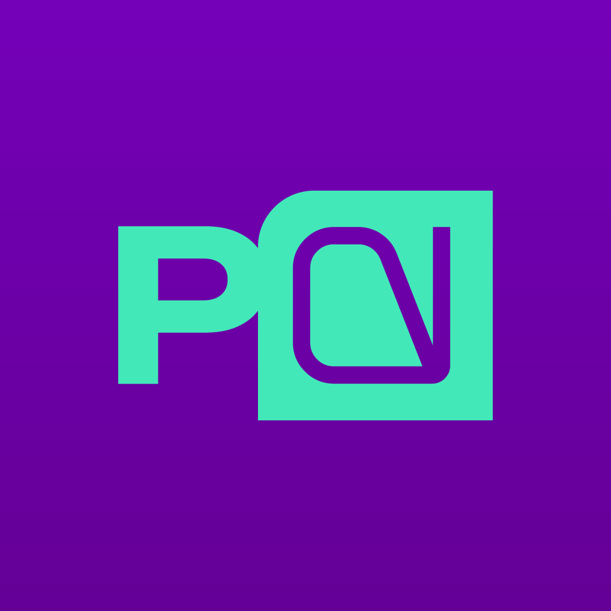

Piensa Digital AI
Optimización Continua
Informe de Optimización y Mejoras
Asistente Digital corporativo de Sanz Clima — evolución de producto, rendimiento y seguridad.
Cliente
Asistente Digital Sanz Clima
Período
Julio 2026
Responsable
Equipo de Desarrollo · Piensa Digital AI
Informe de Optimización y Mejoras — Julio 2026
Página 1 de 2